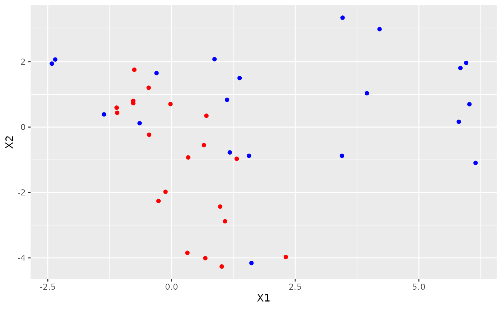

This vignette explains briefly how to use this package.
Package goal
The package has been conceived to evaluate the hypothesis whether two sets of items (a reference set and a questioned set) belong to the same population or not.
Each item is described with a vector of \(p\) measurements.
The evaluation is performed using Bayesian statistics, particularly Gibbs sampling.
The model we applied is that these populations are represented as samples from Multivariate Gaussian distributions, with unknown means and covariance matrices.
Particular care has been given in order to obtain strongly performing functions. The main core is written using Rcpp.
For more theoretical details, see (Bozza et al. 2008).
Package contents
The package supplies several functions to compute common densities (e.g. Wishart, Inverted Wishart), and two functions to compute the marginal likelihood of observations, as well as the full Likelihood Ratio (marginalLikelihood(), samesource_C()).
Usage
This section describes the usage on some made-up data.
Sample data
We create some dummy data, generated by two bivariate Gaussian distributions with known means and covariances. Covariance matrices are generated using the bundled rwish() function, to obtain invertible matrices with ease.
Here are the datasets:

It is clear that the two samples come from different populations, hence we expect a low likelihood-ratio value.
Model and prior specification
The package implements a two-sample Bayesian Hierarchical model with Gaussian multivariate likelihoods, and Inverse-Wishart prior on the covariance matrices.
The theoretical details are specified in (Bozza et al. 2008).
Background model
Let us recall the model definition.
We suppose to have background observations from a set of \(m\) sources.
Each observation lies in a \(p\)-dimensional space.
We note with \(X_{ij}\) the \(j\)-th sample from the \(i\)-th source, \(i = 1, \ldots, m\). The \(i\)-th source is assumed to generate data from a Multivariate Normal, with mean vector \(\theta_i\), and covariance matrix \(W_i\).
\[\begin{align}
X_{ij} \; | \; \theta_i, \; W_i &\sim N_p(\theta_i, W_i) \quad \forall j = 1, \ldots, n \\
\theta_i \; | \; \mu, B &\sim N_p(\mu, B) \\
W_i \; | \; U, n_w &\sim IW(U, n_w)
\end{align}\]
where \(n_w > 2\,p\), and \(U\) is set s.t. \[E[W_i] = \frac{U}{n_w - 2(p + 1)}\] (parametrization according to (Press 2012)).
Computation
Since the full conditionals are conjugated, a Gibbs sampler can be implemented for this model. See the details in (Bozza et al. 2008).
Prior elicitation
As the model is Bayesian, we are required to specify the hyperparameters \(\mu, B, U, n_w\), as well as the Gibbs chain initialization \(W_i\).
Notice that inference is propagated by supplying the inverses of covariance matrices, i.e. \(B^{-1}\) and \(W_i^{-1}\).
Example (hyper)priors can be set like this:
eps <- 0.1
B.inv <- eps*diag(p)
W.inv.1 <- eps*diag(p)
W.inv.2 <- eps*diag(p)
U <- eps*diag(p)
nw <- 2*(p + 1) + 1
mu <- (mean.quest + mean.ref)/2
The package proves the function make_priors_and_init() to supply these parameters based on a background dataset.
It returns a list containing estimates for \(\mu\), \(B^{-1}\), \(U\), the initialization for \(W_i^{-1}\), and the smallest possible \(n_w\) such that the matrices are invertible.
The prior elicitation is described in the dedicated vignette: vignette("Prior elicitation").
Observation model
The package has been written to evaluate whether two sets of observations come from the same source (\(H_p\)) or not (\(H_d\)). Background information (the hyperparameters) is noted with letter \(I = \left\{\mu, B, U, n_w \right\}\).
We note with \(Y_{ij}\) the \(j\)-th sample from the \(i\)-th considered set, where \(i \in [\text{reference}, \text{questioned}]\).
Collectively, we shorten \(Y_i = \left\{ Y_{ij} \right\}_j\).
Bayes Factor
The Bayes Factor for this problem can be written as:
\[\text{BF} = \frac{ p(Y_{\text{reference}}, Y_{\text{questioned}} \mid I, H_p) }{p(Y_{\text{reference}}, Y_{\text{questioned}} \mid I, H_d)}\]
Notice that the numerator is a marginal likelihood:
\[p(Y_{\text{reference}}, Y_{\text{questioned}} \mid I, H_p) = \int p( Y_{\text{reference}}, Y_{\text{questioned}} \mid \theta, W ) p(\theta, W \mid \mu, B, U, n_w) \text{ d}\theta \text{ d}W \]
and the denominator is a product of marginal likelihoods (assuming independence between sources under \(H_d\)):
\[\begin{align}
p(Y_{\text{reference}}, Y_{\text{questioned}} \mid I, H_d) &=
p(Y_{\text{reference}} \mid I, H_d) p(Y_{\text{questioned}} \mid I, H_d) = \\
&= \left( \int p( Y_{\text{reference}} \mid \theta, W ) p(\theta, W \mid \mu, B, U, n_w) \text{ d}\theta \text{ d}W \right)
\left( \int p( Y_{\text{questioned}} \mid \theta, W ) p(\theta, W \mid \mu, B, U, n_w) \text{ d}\theta \text{ d}W \right)
\end{align}\]
Computation
The marginal likelihood is computed with the function marginalLikelihood() from the Gibbs sampler output using (Chib 1995).
E.g. here we compute \(p(Y_{\text{questioned}} \mid I, H_d)\):
burn.in = 1000
n.iter = 10000
marginalLikelihood(as.matrix(df.quest), n.iter, B.inv, W.inv.1, U, nw, mu, burn.in, verbose = FALSE)
## [1] -80.5086
the LR value can be computed as well, now considering two samples. The function is samesource_C(): (W.inv.2 is used only for chain initalisation).
samesource_C(as.matrix(df.quest), as.matrix(df.ref), n.iter, B.inv, W.inv.1, W.inv.2, U, nw, mu, burn.in, verbose = FALSE)
## [1] -8.670725
Notice how low it is compared to using a subset of the reference data as the questioned items (same source, supporting \(H_p\)):
samesource_C(as.matrix(df.ref)[1:20,], as.matrix(df.ref), n.iter, B.inv, W.inv.1, W.inv.2, U, nw, mu, burn.in, verbose = FALSE)
## [1] 22.02843
All marginal likelihoods in the BF formula can also be obtained by specifying marginals = TRUE:
samesource_C(
as.matrix(df.quest),
as.matrix(df.ref),
n.iter, B.inv, W.inv.1, W.inv.2, U, nw, mu, burn.in, verbose = FALSE, marginals = TRUE
)
## $value
## [1] -8.663289
##
## $log_ml_Hp
## [1] -200.5255
##
## $log_ml_Hd_ref
## [1] -111.368
##
## $log_ml_Hd_quest
## [1] -80.49428
Diagnostics
The package supports the output of the entire chain for \(\theta_i\) and \(W^{-1}_i\) (i.e., the inverse of \(W_i\)).
At the time, this is possible only during the computation of a single marginal likelihood, in this case the one related to the sample from the questioned population, namely:
\(\left( \int p( Y_{\text{questioned}} \mid \theta, W ) p(\theta, W \mid \mu, B, U, n_w) \text{ d}\theta \text{ d}W \right)\)
Notice that results now is a list, where results$value holds the marginal likelihood value, and results$mcmc is the coda object which holds the chain output.
## Markov Chain Monte Carlo (MCMC) output:
## Start = 1001
## End = 1005
## Thinning interval = 1
## theta.1 theta.2 W.inv.1 W.inv.2 W.inv.3 W.inv.4
## [1,] 0.27705514 -0.6446322 3.233887 0.9673711 0.9673711 0.5883328
## [2,] 0.05410904 -1.5346673 1.405348 0.3767320 0.3767320 0.5773098
## [3,] 0.36381261 -0.8899626 1.916730 0.7619017 0.7619017 0.6600169
## [4,] 0.00767722 -0.9441759 3.344633 1.4356383 1.4356383 0.9910974
## [5,] -0.12565367 -0.3843985 4.088822 1.0591426 1.0591426 0.5582402
Remember that R is column-major: W.inv.1 is \(W^{-1}_1(1,1)\), W.inv.2 is \(W^{-1}_1(2,1)\) and so on.
Using standard coda tools, we can perform diagnostics, such as summaries:
##
## Iterations = 1001:10000
## Thinning interval = 1
## Number of chains = 1
## Sample size per chain = 9000
##
## 1. Empirical mean and standard deviation for each variable,
## plus standard error of the mean:
##
## Mean SD Naive SE Time-series SE
## theta.1 0.1778 0.1859 0.001960 0.001960
## theta.2 -1.0684 0.3925 0.004137 0.004045
## W.inv.1 3.2082 0.8828 0.009305 0.009608
## W.inv.2 1.0526 0.3567 0.003759 0.003958
## W.inv.3 1.0526 0.3567 0.003759 0.003958
## W.inv.4 0.6992 0.1938 0.002043 0.002151
##
## 2. Quantiles for each variable:
##
## 2.5% 25% 50% 75% 97.5%
## theta.1 -0.1879 0.05617 0.1784 0.3000 0.542
## theta.2 -1.8482 -1.32138 -1.0731 -0.8112 -0.299
## W.inv.1 1.7321 2.56552 3.1294 3.7571 5.131
## W.inv.2 0.4544 0.80098 1.0196 1.2662 1.860
## W.inv.3 0.4544 0.80098 1.0196 1.2662 1.860
## W.inv.4 0.3747 0.55829 0.6818 0.8214 1.131
and traceplots:

We can recover the original matrices by hand, reshaping the desired columns (e.g. for W.inv) into a matrix/3D array:
n.samples <- nrow(results$mcmc)
W.inv.samples <- results$mcmc[, paste0('W.inv.', seq(1:(p^2)))]
head(W.inv.samples, 5)
## Markov Chain Monte Carlo (MCMC) output:
## Start = 1001
## End = 1006
## Thinning interval = 1
## W.inv.1 W.inv.2 W.inv.3 W.inv.4
## [1,] 3.233887 0.9673711 0.9673711 0.5883328
## [2,] 1.405348 0.3767320 0.3767320 0.5773098
## [3,] 1.916730 0.7619017 0.7619017 0.6600169
## [4,] 3.344633 1.4356383 1.4356383 0.9910974
## [5,] 4.088822 1.0591426 1.0591426 0.5582402
## [6,] 3.095175 0.6505246 0.6505246 0.4239867
W.inv.samples.cube <- array(W.inv.samples, dim = c(n.samples, p, p))
dim(W.inv.samples.cube)
## [1] 9000 2 2
or using the supplied post-processing function mcmc_postproc():
list.postproc <- mcmc_postproc(results$mcmc, compute.ML = TRUE, cumulative = TRUE)
str(list.postproc$theta.samples)
## 'mcmc' num [1:9000, 1:2] 0.27706 0.05411 0.36381 0.00768 -0.12565 ...
## - attr(*, "dimnames")=List of 2
## ..$ : NULL
## ..$ : chr [1:2] "theta.1" "theta.2"
## - attr(*, "mcpar")= num [1:3] 1001 10000 1
str(list.postproc$W.samples)
## num [1:9000, 1:2, 1:2] 0.609 0.862 0.964 0.79 0.481 ...
It also allows for easy computation of posterior point estimators:
list.postproc$theta.samples.ML
## [1] 0.1777568 -1.0683701
list.postproc$W.samples.ML
## [,1] [,2]
## [1,] 0.696931 -1.050408
## [2,] -1.050408 3.198459
More advanced diagnostics are available with the recent {bayesplot} package: